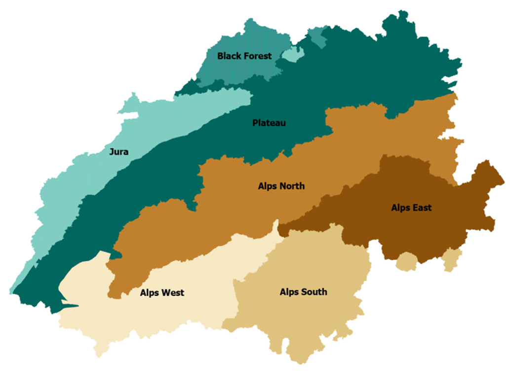
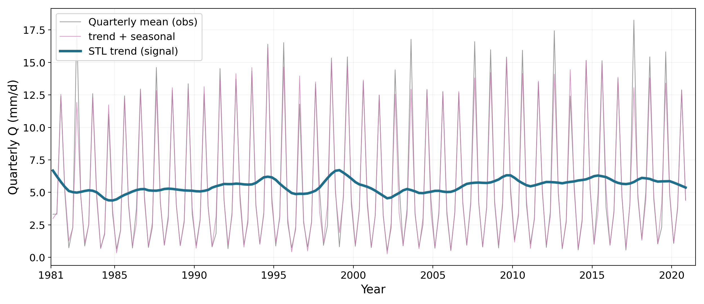
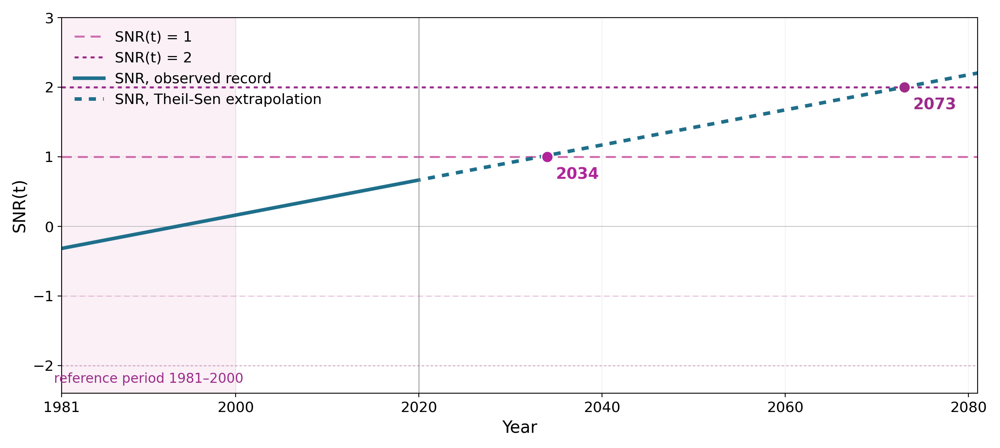
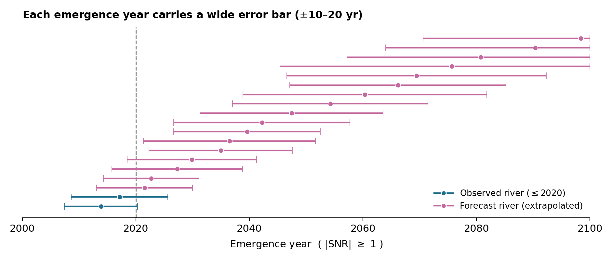
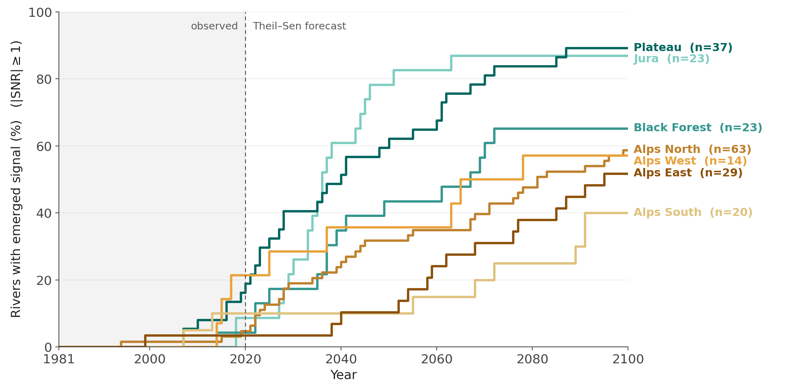
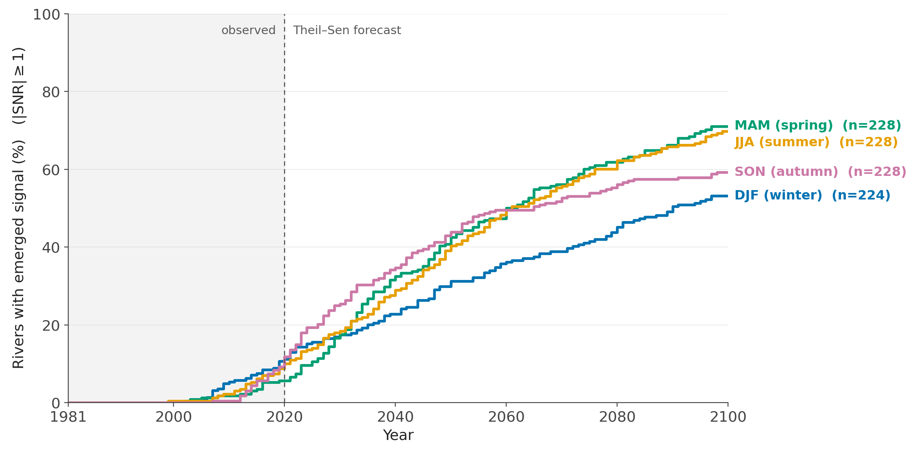
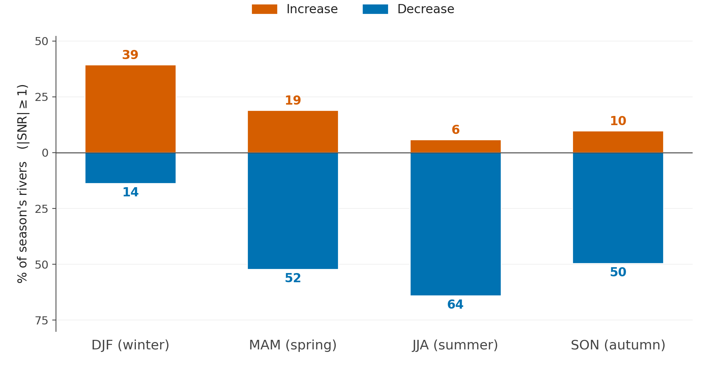
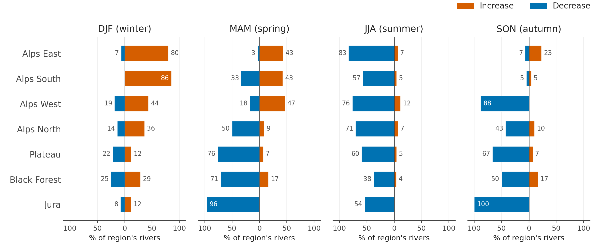
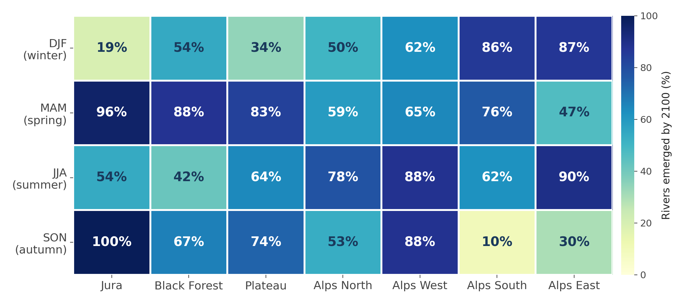

Chapter 3 Hydrology under Climate Change
Author: Rong Bao
Supervisor: Henri Funk
Degree: Bachelor
3.1 Abstract
Streamflow integrates the weather, geology and land cover of an entire catchment into a single measured quantity, which makes it a natural indicator of hydrological change. At the same time, rivers are noisy: they swing between wet and dry years on their own, and this natural variability can mask a slow climate-driven trend for decades. This chapter asks when, where, and in which seasons the climate-change signal in Swiss river flows becomes detectable above natural variability — the time of emergence (ToE) (Hawkins and Sutton 2012) — and whether flow is increasing or decreasing. Using observed daily discharge from 209 quality-controlled catchments of the CAMELS-CH dataset (1981–2020) (Höge et al. 2023), the climate signal is separated from noise with a robust STL decomposition (Cleveland et al. 1990), and emergence is declared when the signal-to-noise ratio (SNR) permanently exceeds a threshold of 1 (lenient) or 2 (strict). By 2020 only 19 of 209 rivers have emerged at the lenient threshold; extrapolating the robust Theil–Sen trend (Sen 1968) suggests a median emergence year around 2046, while 73 rivers never emerge by 2100. Emergence is spatially structured: the low-elevation Jura and Plateau lead, while high Alpine regions are delayed in the annual analysis because winter increases and summer decreases partly cancel. A complementary per-season analysis shows that spring and summer are the sentinel seasons (about 70 % of rivers emerged by 2100), and reveals a seasonal redistribution of water: winter flows predominantly rise while summer flows predominantly fall. Estimated emergence years carry substantial uncertainty and should be read as indicative; the direction, ordering and spatial-seasonal pattern of change are the robust results.
3.2 Introduction
Hydrology is the study of water moving through the landscape: rain and snow fall, water is stored in soil, snowpack and glaciers, and eventually reaches the rivers. Streamflow — the amount of water in a river — is special among climate indicators because it aggregates the meteorological forcing and physical properties of a whole catchment into one number that is measured operationally, often for many decades.
One difficulty runs through any attempt to detect climate change in river flow: rivers are noisy. Even without any external forcing, discharge fluctuates strongly between wet and dry years and between decades. Natural variability in this sense is the year-to-year and decade-to-decade swing a river shows on its own; it has no long-term trend and averages to zero over time. A forced climate signal only becomes detectable once it has grown large relative to this background — the concept of the time of emergence, introduced for temperature by Hawkins and Sutton (2012) and since applied across climate variables.
The way around the noisiness of individual records is scale: analysing not one river but hundreds at once. This is exactly what the recent large-sample hydrology datasets enable. The research question of this chapter is therefore:
When, where, and in which seasons does the climate-change signal in Swiss streamflow become detectable above natural variability — and is the flow increasing or decreasing?
3.3 Data
3.3.1 The CAMELS family
Large-sample hydrology requires data for hundreds of catchments in one consistent format. CAMELS (“Catchment Attributes and MEteorology for Large-sample Studies”) datasets package, for every gauged catchment in a region, three matched data types: (i) daily streamflow at the gauge, (ii) catchment-averaged meteorology (precipitation, temperature, potential evapotranspiration), and (iii) static attributes describing topography, climate, soil, geology and land cover (Addor et al. 2017). Following the original US dataset, national versions exist for Great Britain (Coxon et al. 2020), Brazil (Chagas et al. 2020), Central Europe (Klingler et al. 2021) and North America (Arsenault et al. 2020), among others, and the Caravan initiative merges them into a global community dataset (Kratzert, Nearing, Addor, et al. 2023).
3.3.2 CAMELS-CH and the case for Switzerland
CAMELS-CH is the Swiss member of this family (Höge et al. 2023). It covers 331 catchments in hydrologic Switzerland over 40 years (1981–2020); about one third of the catchments extend into neighbouring countries. This chapter uses two components: the observed daily specific discharge (mm d-1) — simulated series are deliberately excluded, because the goal is to identify emergence directly from observations — and the catchment boundary polygons, needed to assign every gauge to a reporting region.
Switzerland is a natural laboratory for this question. It is often called the “water tower of Europe”, holding the largest share of the Alpine glacier mass, and change is already visible throughout its water cycle: Alpine snow cover has declined by more than 8 % per decade since the early 1970s (Matiu et al. 2021), glaciers have lost about half of their volume since 1931 (Mannerfelt et al. 2022), flood frequency has increased in parts of the country since around 1970 (Schmocker-Fackel and Naef 2010), and the Alps are literally turning greener (Rumpf et al. 2022). The broader water cycle is clearly changing; the precise question here is when that change becomes statistically visible in river discharge itself.
3.3.3 Regions and preprocessing
For reporting, catchments are grouped into the seven official FOEN bio-geographic regions (Fig. 3.1): Jura, the Black Forest border area, the Plateau, and the four Alpine regions Alps North, West, South and East. This grouping matters because Switzerland is not hydrologically uniform — a low-elevation Plateau river and a high Alpine snowmelt river can respond very differently to warming. Regions are assigned by spatial overlay of the official region polygons with the CAMELS-CH catchment polygons; each catchment is assigned to the region covering the largest share of its area. About 20 % of catchments cross a regional boundary.

FIGURE 3.1: The seven FOEN bio-geographic regions of Switzerland used for reporting. Adapted from Höge et al. (2023) (Fig. 4); region polygons: Swiss Federal Office for the Environment (FOEN).
Three preparation steps precede the analysis. First, daily discharge is aggregated to quarterly means using climatological seasons (DJF, MAM, JJA, SON; December is assigned to the following year’s winter). Second, quality control: a quarter with more than 5 % of daily values missing is dropped, and a station is excluded entirely if any of its seasonal series is more than 20 % incomplete. After filtering, 209 of the 331 rivers remain. Third, the regional assignment described above.
3.4 Methods
3.4.1 Signal versus noise
Any observed change in river flow can be decomposed into a forced, climate-related signal and noise — natural variability including wet and dry years and extreme events that are not part of the long-term trend. A signal is detectable only when it is large compared with the noise, which motivates a signal-to-noise framework.
3.4.2 STL decomposition
Alpine rivers have a strong seasonal cycle — high flow in the melt season, low flow in winter — which would dominate the analysis and inflate the noise if left in the series. STL (Seasonal-Trend decomposition using Loess) (Cleveland et al. 1990) writes the observed quarterly flow \(Y_t\) as three additive components,
\[ Y_t = T_t + S_t + R_t, \]
where \(T_t\) is the slowly varying trend (used as the signal), \(S_t\) the regular within-year seasonal cycle, and \(R_t\) the remainder (used to estimate the noise).
STL assumes no parametric model; every component is built from one smoother, loess, applied inside two nested loops. Loess estimates the value at a target time \(x\) by taking the \(q\) nearest observations, scaling their distances by \(\lambda_q(x)\), the distance to the \(q\)-th nearest neighbour, down-weighting more distant points, and fitting a locally weighted regression. The inner loop alternates between updating the seasonal component — smoothing each seasonal subseries (all winters together, all springs together, …) and removing leftover trend with a low-pass filter — and updating the trend by smoothing the deseasonalised series. The outer loop makes the procedure robust: points with extreme remainders receive small (or zero) robustness weights before the inner loop is repeated. This matters hydrologically because flood and drought years are real but should not bend the long-term trend; here the outer loop is iterated 15 times.
3.4.3 Signal, noise, and time of emergence
The reference period is 1981–2000 (80 quarterly values), treated as the pre-change baseline. The signal at time \(t\) is the STL trend relative to its baseline mean, and the noise \(\sigma_N\) is the standard deviation of the STL remainder over the same period, so every river is scaled by its own baseline variability:
\[ \mathrm{SNR}(t) \;=\; \frac{T_t - \overline{T}_{\mathrm{ref}}}{\sigma_N}, \qquad \sigma_N = \mathrm{sd}\!\left(R_t \,\middle|\, t \in \text{1981–2000}\right). \]
The time of emergence is the first year in which \(|\mathrm{SNR}(t)|\) crosses a threshold and stays beyond it until the end of the record. Two thresholds are reported, following the time-of-emergence literature (Hawkins and Sutton 2012): a lenient level \(|\mathrm{SNR}| \ge 1\) and a strict level \(|\mathrm{SNR}| \ge 2\).
To extend the analysis beyond 2020, the trend is extrapolated with the Theil–Sen slope (Sen 1968): the median of the slopes between all pairs of time points (12,720 pairwise slopes for 160 quarters). The median is stable because a single extreme event can affect some pairs but cannot easily control the middle of the distribution.
3.4.4 A worked example
Figures 3.2 and 3.3 illustrate the pipeline for gauge 2219. The observed quarterly series (grey) is strongly seasonal and noisy; STL separates the seasonal cycle (pink: trend + seasonality) from the smooth trend (blue). For this river the baseline trend mean is 5.40 mm d-1 and the baseline noise is 0.89 mm d-1. The Theil–Sen slope is positive, about +0.22 mm d-1 per decade, so this river is getting wetter in the trend component. By 2020 the SNR reaches 0.67 — below the lenient threshold, so the signal has not yet emerged within the observed record; extrapolation puts lenient emergence at 2034 and strict emergence at 2073.

FIGURE 3.2: Worked example (gauge 2219): observed quarterly flow (grey), STL trend plus seasonality (pink) and STL trend (blue).

FIGURE 3.3: Worked example (gauge 2219): the trend standardised by baseline noise, with the lenient and strict emergence thresholds and the extrapolated Theil–Sen trend.
3.5 Results
3.5.1 Annual emergence and threshold sensitivity
Across all 209 analysable rivers, the choice of threshold matters greatly for the numbers but not for the conclusion (Table 3.1). At the lenient threshold, 19 rivers have already emerged by 2020, another 117 are projected to emerge by 2100 (median emergence year around 2046), and 73 never emerge by 2100. At the strict threshold only 2 rivers have emerged, 71 are projected to emerge, and 136 never do. Either way, most annual-flow emergence is not yet visible in 2020 — it happens after mid-century.
| Threshold | Emerged by 2020 | Projected 2021–2100 | Never by 2100 |
|---|---|---|---|
| Lenient (\(\lvert\mathrm{SNR}\rvert \ge 1\)) | 19 | 117 | 73 |
| Strict (\(\lvert\mathrm{SNR}\rvert \ge 2\)) | 2 | 71 | 136 |
How certain are these years? Of the 136 rivers that emerge at the lenient threshold, only 19 do so within the observed record; all other years are extrapolations. Each estimated year therefore carries an error bar — formally about ±5 years, realistically 10–20 years, widening into the future (Fig. 3.4). The direction and the ordering of emergence are trustworthy; any single year should be read as ±a decade, and anything past 2080 as indicative only.

FIGURE 3.4: Uncertainty of estimated emergence years: the dark band shows the formal range (about $$5 years), the pale band a realistic range (10–20 years), widening into the future.
3.5.2 Regional patterns: low elevations lead
Emergence is spatially structured (Fig. 3.5). The low-to-mid elevation regions climb fastest: by 2050 the Jura reaches 78 % emerged and the Plateau 62 %. The high Alpine regions are slower — Alps North, East and South reach only about 40–60 % by 2100, with Alps South slowest at roughly 40 %. This may seem surprising given how strongly the Alps are affected by warming, but in high Alpine catchments winter increases and summer decreases can partly cancel in the annual mean, delaying annual emergence — a first hint that the annual perspective hides the real fingerprint.

FIGURE 3.5: Cumulative share of rivers with an emerged annual signal over time, by bio-geographic region (lenient threshold).
3.5.3 Seasonal analysis: spring and summer as sentinels
Climate change in Alpine hydrology has a seasonal fingerprint: snow storage, snowmelt timing, glacier melt and rainfall affect different seasons differently. For each gauge, four annual series are built (one value per year for DJF, MAM, JJA, SON). Since each series has one value per year, no within-year cycle remains and STL is not re-applied; instead the signal is a Theil–Sen robust line, the noise is the standard deviation of detrended residuals over 1981–2000, and the emergence rule is unchanged.
By 2020 the emerged share is still around 10 % in every season; the seasons then separate (Fig. 3.6). By 2050 spring, summer and autumn reach about 40–44 % while winter lags at 31 %; by 2100 spring reaches 71 % and summer 70 %, against 59 % in autumn and 53 % in winter. Spring and summer are the sentinel seasons — not the only seasons changing, but those where emergence becomes most widespread.

FIGURE 3.6: Emerged share of rivers over time for each season (lenient threshold).
3.5.4 Direction of change: winter up, summer down
The directional split is clean (Fig. 3.7). Winter is the only season where rises dominate: 39 % of winter rivers show a rising signal by 2100 against 14 % falling. Every other season is dominated by declines, most extremely summer, where 64 % of rivers decline and only 6 % rise. A plausible mechanism is the classic Alpine fingerprint: warming turns winter snowfall into rain and shifts snowmelt earlier, so more water leaves in winter and less meltwater remains for summer. The data thus show a seasonal redistribution of water — more flow in winter, less in the rest of the year — which is partly hidden in annual averages.

FIGURE 3.7: Share of rivers per season whose signal emerges by 2100 with rising versus falling direction (lenient threshold); the gap to 100% corresponds to rivers that never emerge.
The direction also varies systematically by region (Fig. 3.8). Winter increases are concentrated in the high Alps (86 % of emerged rivers rising in Alps South, 80 % in Alps East), while low regions are mixed. In summer, declines dominate everywhere (83 % in Alps East, 76 % in Alps West, 71 % in Alps North, 60 % on the Plateau). Spring shows the sharpest contrast: strongly decreasing in the low regions (Jura 96 %, Plateau 76 %, Black Forest 71 %) while the western, southern and eastern Alps retain 43–47 % increasing shares. In autumn, decreases dominate almost everywhere (Jura 100 %, Alps West 88 %, Plateau 67 %). The winter-up signal is an Alpine signal; the decreases appear first and most completely in the low regions.

FIGURE 3.8: Direction of the emerged signal by 2100, split by season and bio-geographic region: share of emerged rivers with rising (red) versus falling (blue) flow.
Finally, the season-by-region heatmap (Fig. 3.9) gives the fine structure of emergence extent by 2100. In winter, emergence climbs with elevation, from 19 % in the Jura to 86–87 % in Alps South and East. Spring is almost the mirror image, strongest in the low regions (Jura 96 %, Black Forest 88 %, Plateau 83 %) and weakest in Alps East (47 %). Summer peaks in the Alps (Alps East 90 %, Alps West 88 %, Alps North 78 %), and autumn is the most uneven row (Jura 100 %, Alps West 88 %, but Alps South only 10 %). Every region has at least one season with high emergence — but which season differs systematically.

FIGURE 3.9: Season-by-region heatmap: share of rivers whose signal emerges by 2100 at the lenient threshold, in either direction.
3.6 Conclusion
Five points summarise this chapter. Method: the signal is the STL trend relative to the 1981–2000 baseline, scaled by baseline noise; emergence is the first lasting crossing of an SNR threshold. Timing: of 209 rivers, only 19 have emerged by 2020 at the lenient threshold; the median projected emergence year is around 2046, and 73 rivers never emerge by 2100. Geography: the Jura and Plateau lead (62–78 % emerged by 2050), while the high Alpine regions are slower in the annual analysis. Season: spring and summer are the sentinel seasons, each reaching about 70 % of rivers emerged by 2100. Direction: winter up, summer down — winter is the only season where rises dominate (39 % of rivers), while summer declines most (64 % falling).
The strength of this analysis lies in the direction, the spatial and seasonal pattern, and the relative timing of change — which regions and seasons emerge earlier than others. The specific emergence years are estimates with substantial error bars; their value is comparative, not predictive. A useful monitoring strategy for Swiss rivers should therefore be seasonal and regional, not only national and annual.